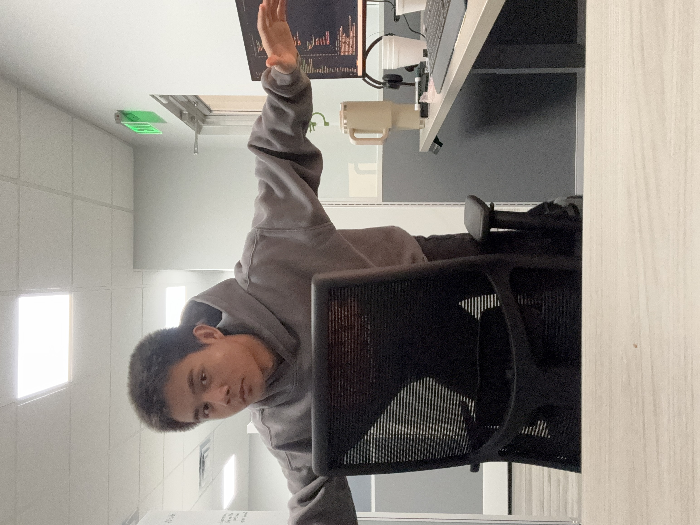

PY / INV
Panel Layout Automation Engine
Parses electrical diagrams and auto-places components onto 3D panel models in Inventor via a custom region-optimization layout engine.
WELCOME!
Mechanical Engineering @ Northwestern · Problem Solver
R&D Programming Intern at AAON, Inc. — building CAD automation tools that turn electrical diagrams into fully placed 3D panel models. When I'm not scripting Inventor, I'm playing the guitar, watching foriegn tv shows, and catching up on the Word of God.

SHEET 01 / ABOUT
I grew up in Tulsa, Oklahoma, in a household where HVAC manufacturing was the dinner-table topic — both of my parents work in manufacturing and quality roles at AAON. So when I got the chance to intern there as an R&D Programming Intern, it felt less like a summer job and more like getting to finally sit at the table I'd been listening in on for years.
Now I'm a junior mechanical engineering student at Northwestern (Class of 2028), and the thread running through everything I do — coursework, internship, side projects — is the same: take something that's slow, manual, or error-prone, and rebuild it as a system. That's shown up as a zero-to-one CAD automation pipeline at AAON, as Lagrangian-mechanics simulations for robotics coursework, and as topology-optimized parts for Formula SAE.
Long term, I want to work at the intersection of mechanical design and the software that makes mechanical design faster — tools engineers actually want to use, not tools they're forced to tolerate.
A Mechanical Engineering student, Class of 2028.
Prepared across HVAC fundamentals, Python/OOP, and role-specific technical rounds; accepted the R&D Programming offer.
R&D Programming Intern, Tulsa, OK — began the panel layout automation build.
Shipped config-driven low-voltage panel placement, then extended the engine to tighter-constraint high-voltage panels.
B.S. Mechanical Engineering, Northwestern University.
SHEET 02 / EXPERIENCE
Designing and building a Python-based CAD panel layout automation system from scratch — the first tool of its kind at AAON. It parses electrical diagrams, identifies components, and uses a custom layout engine to auto-place them onto 3D panel models in Autodesk Inventor.
SHEET 03 / PROJECTS
Parses electrical diagrams and auto-places components onto 3D panel models in Inventor via a custom region-optimization layout engine.
FEA-driven topology optimization on the rear wing assembly, achieving a 33% mass reduction while holding structural targets.
Python/Jupyter simulation of a rectangular die bouncing inside a shaken cup, built on Lagrangian mechanics and homogeneous transforms.
Simulated a biped performing a full splits motion under holonomic constraints using Lagrangian mechanics.
Built a MATLAB adaptive step-size ODE solver from first principles and benchmarked it against built-in solvers.
Applied the Rayleigh-Ritz method to a spring-supported beam system to approximate deflection and mode shapes.
No projects match that search — try a different term.
SHEET 04 / SKILLS
SHEET 05 / FEATURED CASE STUDY
Every commercial HVAC electrical panel at AAON was laid out by hand in Inventor — a slow, repetitive process with no tooling to catch collisions or wasted wire runs before they reached the shop floor. Nothing like an automated layout system existed at the company.
Split the problem into diagram parsing, component identification, and placement. Built the placement engine around a "minimal movement" philosophy — regions anchor to configured positions and move only the smallest distance necessary to resolve a collision or boundary violation.
Started with low-voltage panels (boards, relays, terminal blocks, dividers) as a config-driven
proof of concept, then hardened the engine for high-voltage panels with far tighter placement
constraints — including a rewrite of the RegionOptimizer and
CollisionDetector to fix hull-comparison false positives.
Debugged edge cases in the _is_clean() logic down to scoped rectangle-intersection
checks, closing an allocated-filter blind spot that let overlapping regions slip through
undetected.
Reduced wire cost through tighter, more deliberate placement, surfaced layout edge cases before they hit the floor, and lowered the learning curve for engineers who previously had to lay out panels by hand.
Wiring automation is the next frontier — still fully manual today — followed by an interactive 2D layout editor so engineers can reposition components before 3D generation.
SHEET 06 / LEADERSHIP
Role — Northwestern University
Short description of responsibilities and impact. Replace with your actual club or team involvement.
Role — Location
Short description of volunteer work and its outcome. Swap in your real experience here.
Title — Organization
Short description of leadership scope, team size, and results. Edit before publishing.
SHEET 07 / ACHIEVEMENTS
Issuer · Year
Issuer · Year
Northwestern Formula SAE
Northwestern University
SHEET 08 / RESUME
SHEET 08 / CONTACT
Open to internship and full-time conversations in mechanical design, R&D, and engineering software.